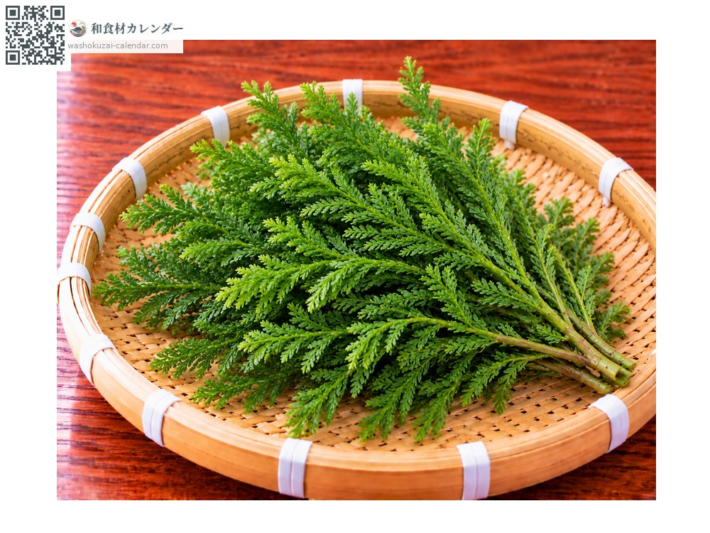
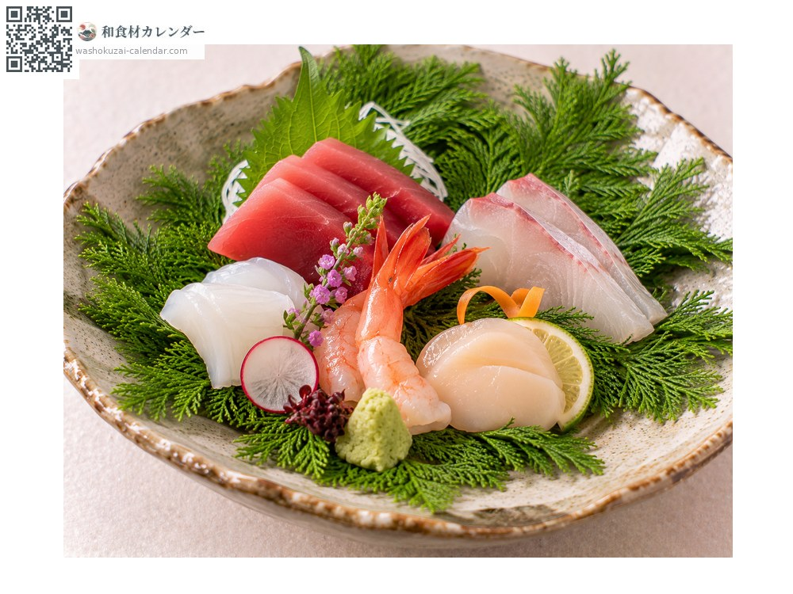
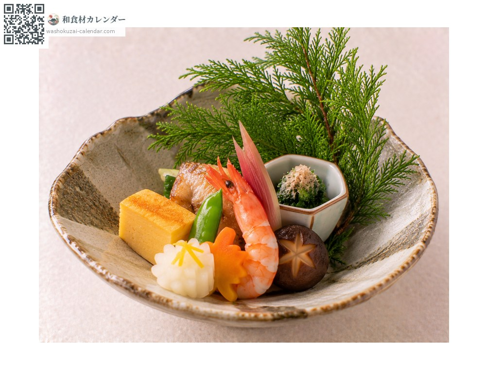
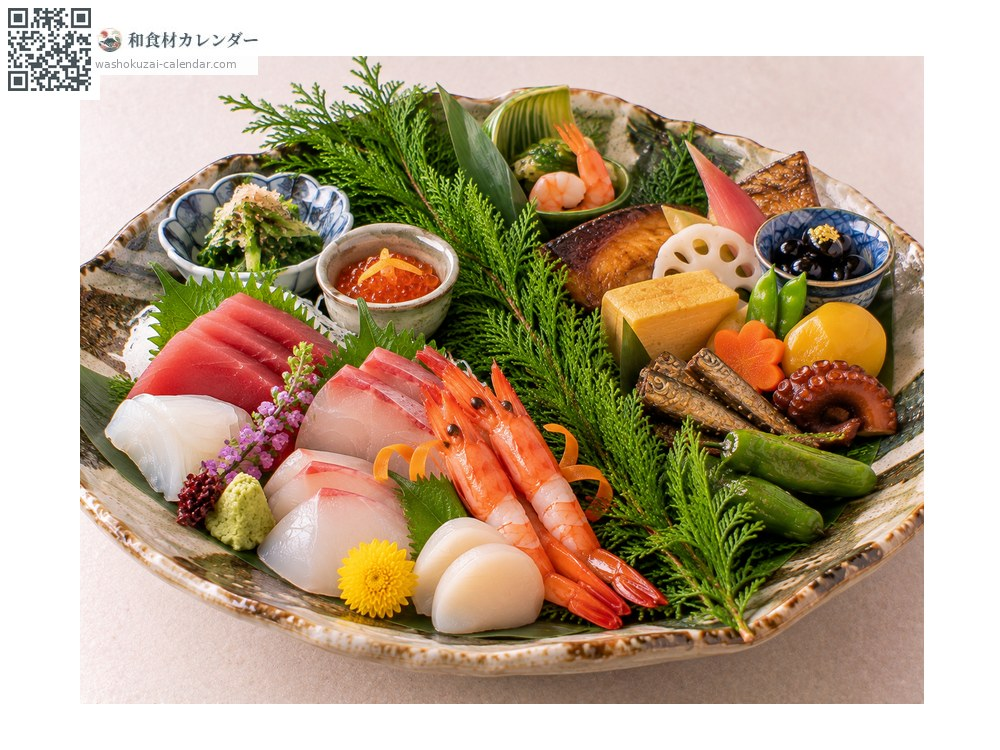

立桂 たちかずら tachikazura
ชื่ออื่นtachikazura, tatekazura, hikagenokazura
ยังไม่ได้ระบุช่วงที่อร่อยที่สุด

ช่วงอร่อยที่สุดมีจำหน่าย

ปูบนจานหรือถาดแล้ววางอาหารทับ สีเขียวช่วยขับอาหารให้เด่น

พิงกับภาชนะเพื่อสร้างความสูง ทำให้การจัดจานมีมิติ

วางคั่นระหว่างอาหารในจานใหญ่ ใช้แบ่งขอบเขต
สีเขียวเข้ม ใบละเอียดขึ้นแน่น ปลายกิ่งยังแข็งแรง
ไม่ทนความแห้ง ห่อกระดาษชื้นแล้วปิดสนิทแช่เย็น ไม่ใช่ของกิน ห้ามรับประทาน
ชื่อทางการคือฮิคาเงะโนะคาซึระ เป็นพืชตระกูลเฟิร์นที่มีใบละเอียดคล้ายใบสน ในอาหารญี่ปุ่นใช้ปูรองหรือตกแต่ง ไม่ใช่อาหาร แต่มีไว้เพื่อเพิ่มสีสันและมิติให้จาน สมัยก่อนยังใช้ประดับในพิธีชินโตด้วย